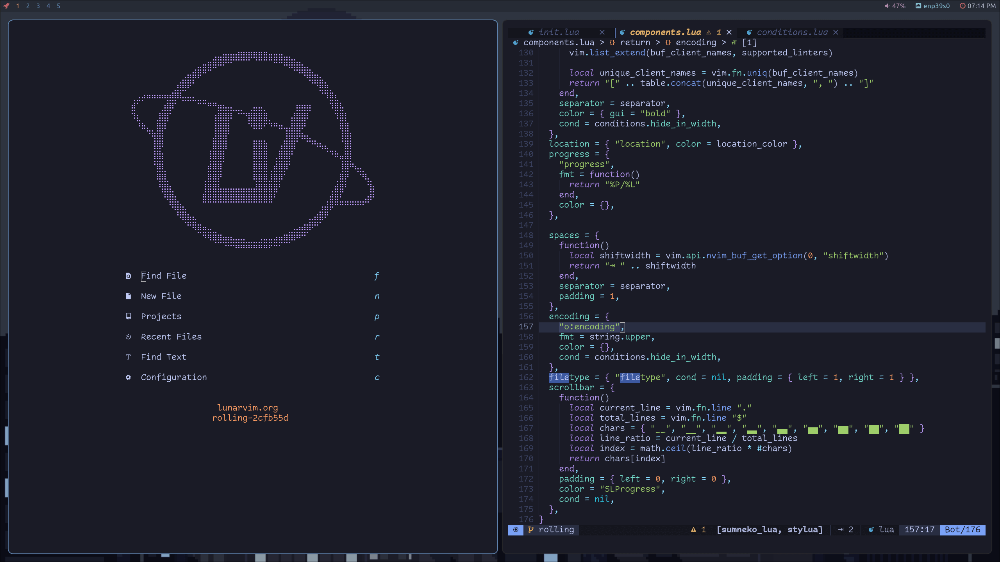

About Me

Nama saya Mifthahul Rezki Akbar. Lebih biasa dipanggil Akbar. Saya adalah siswa dari SMK Negeri 1 Bukittinggi. Saya memiliki hobi mengotak-atik laptop saya sendiri. Saya tertarik dengan hal-hal yang berkaitan dengan Linux.
Nama saya Mifthahul Rezki Akbar. Lebih biasa dipanggil Akbar. Saya adalah siswa dari SMK Negeri 1 Bukittinggi. Saya memiliki hobi mengotak-atik laptop saya sendiri. Saya tertarik dengan hal-hal yang berkaitan dengan Linux.

Pada artikel ini, kita akan membahas sebuah text editor bernama
LunarVim. Text editor ini merupakan fork (pengembangan) dari
Vim, dimana semua plugin yang tersedia untuk Neovim digabung
dan dibentuk menjadi sebuah text editor. LunarVim juga bisa
dijadikan sebagai IDE editor.
LunarVim merupakan text editor yang berbasis Neovim, dimana
plugin-plugin yang berhubungan dengan IDE editor disatukan
dan menjadi sebuah text editor yang baru.

Saat pertama kali membuka LunarVim, kita akan ditampilkan
dengan shortcut yang mirip dengan AstroNvim. Kita juga
mendapat logo LunarVim berbentuk dot-dot yang menyatu
Untuk menginstal LunarVim sebenarnya cukup mudah. Kita hanya
perlu menyiapkan bahan-bahan seperti berikut :
-> Neovim (v0.8.0 atau lebih)
-> Bahan untuk build LunarVim (git, make, pip, python, node,
dan cargo)
Langsung saja kita ke tahapan instalasi LunarVim nya!
# Installing build dependencies
$ sudo apt install git make pip python node cargo
# Installing LunarVim
$ LV_BRANCH='release-1.2/neovim-0.8' \
bash <(curl -s https://raw.githubusercontent.com/lunarvim/lunarvim/master/utils/installer/install.sh)
Secara otomatis, LunarVim akan terinstal pada distribusi Linux kita.